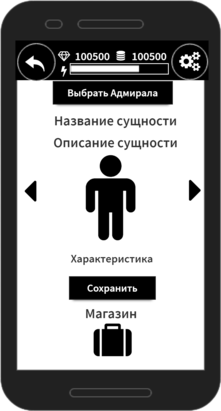

Пошаговая система боя при большом разнообразии возможных действий дают возможность использовать свой флот с максимальной эффективностью и мощью
Пошаговая карточная стратегия с быстрыми колоритными сражениями не оставит ценителя равнодушным
Суммарное количество вариантов флота, с которым можно начать бой, без учета апгрейда юнитов, составляет более 333 вариантов, а в бою увеличивается до 10k+
Грамотная адаптация под тач-скрины и концепт-продуманность интерфейсного функционала делают игру максимально простой и интуитивной в использовании
Детальная интеграция экономической составляющей во все игровые механики делает игровой процесс как эффективно сбалансированным, так и многогранным
Игровая инфраструктура и большая вариативность механик и юнитов врага максимально способствуют реализации всех амбиций и скрытых желаний игрока
Грамотное развитие и использование своей персональной корпорации дает возможность быстро и эффективно построить наиболее прокачанный флот
О чем игра

Starbreenity - игра о стратегии компоновки и сражения космических флотилий. Выполненная в научно-фантастическом жанре, включает в себя глубокое планирование пошаговых боев. В сочетании с высокой скоростью боя и впечатляющими визуальными эффектами время игровой сессии пролетает буквально незаметно.
Starbreenity - игра для любителей шахмат, так как сочетает в себе глубину пошаговой стратегии с множеством вариантов возможного развития событий. Мультифункциональные космические корабли воплощают концепцию “3 фигуры” в одной, наподобие ферзя, включающего в себя свойства пешки, слона и ферзя Небольшое количество юнитов со схожими механиками поведения, так, в шахматах всего 6 типов фигур, так и в Starbreenity всего 7 типов кораблей, значительно отличающихся по функционалу и природе Каждая фигура в шахматах, та же пешка, может делать несколько видов действий - атаковать и продвигаться вперед, брать на проходе, также и корабли в Starbreenity, содержащие в себе по 3 командных модуля, определяющие различные стратегии поведения корабля.
Starbreenity - игра для любителей покера. Покер любят за неизвестность того, какие силы есть у оппонента, и возможность выяснить это, используя дедукцию и анализ человеческого фактора. Так же и в Starbreenity - на поле боя, в одном из кораблей своего флота, тайно присутствует Адмирал ,смерть которого приводит к фактическому поражению флота. Поэтому стратегия Starbreenity сводится не к монотонному истреблению вражеского флота, а акцентированной охоте на вражеского адмирала и защите своего.
Схема боя
Бой в Starbreenity начинается стандартно - матчатся 2 оппонента, имеющих ориентировочно одинаковую силу флота.
Первым ходит флот, адмирал которого имеет более высокий параметр “Инициатива”, который может меняться по ходу боя, что выгодно отличает Starbreenity от игр, где очередность хода определяется случайно на весь бой в самом начале. Далее, когда известно, какой игрок ходит первым, необходимо выбрать корабль для хода.
После выбора корабля нужно выбрать, каким командным модулем - базовым, эпическим или оборонительным походить. Детальную информацию о комоде можно получить длительным нажатием. После выбора командного модуля, необходимо выбрать цели. Далее наступает очередь корабля оппонента, и так пока не походят все 6 кораблей, тогда завершается 1 из 7 раундов. Победить можно либо уничтожив корабль с вражеским адмиралом, либо по сравнению силы оставшегося флота по истечении 7 раунда.
Подготовка к бою

Для того, чтобы эффективно сражаться в бою, необходимо составить пресеты как для различных вариаций боя, так и просто для того чтобы не играть одним и тем же пресетом все время. Составление пресета - многоступенчатый процесс, при котором необходимо взвешенно обдумывать необходимость наличия любого из компонентов в составе, так как это может существенно повлиять на исход будущего сражения.
Для формирования пресета необходимо выбрать адмирала и подобрать ему артефакты, расставить корабли на 3 из 4 слотов, каждый корабль экипировать 3 командными моделями. При составлении пресета необходимо учитывать, что чем больше параметр “Инициатива” у адмирала, тем более вероятно, что флот будет ходить первым в раунде. Не стоит забывать, что высокая инициатива достигается уменьшением огневой мощи и брони кораблей, а также запасов энергии.

Важно, что бы ключевые действия, которые могут совершать корабли благодаря интегрированным командным модулям, эффективно сочетались с “характером” адмирала, перекрывая слабости друг друга и усиливая достоинства.